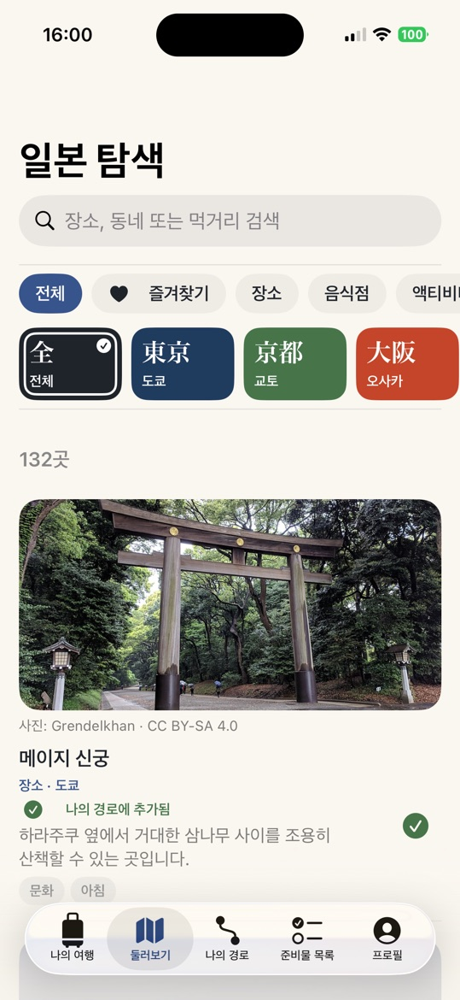
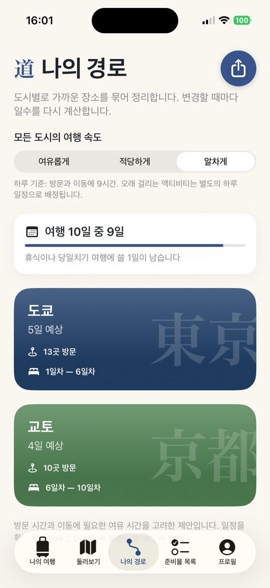
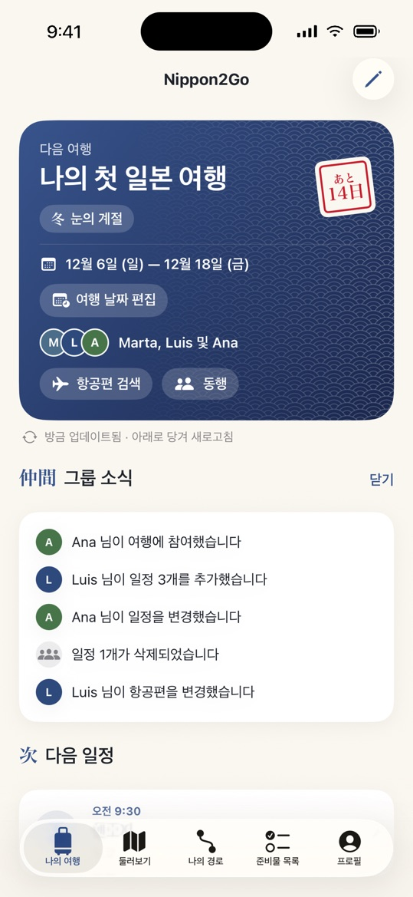
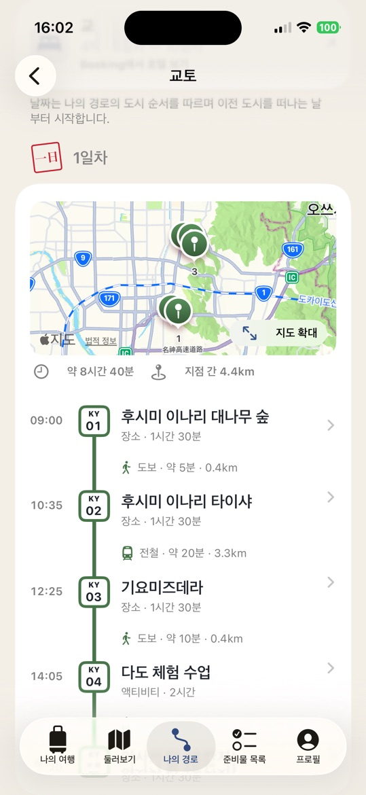
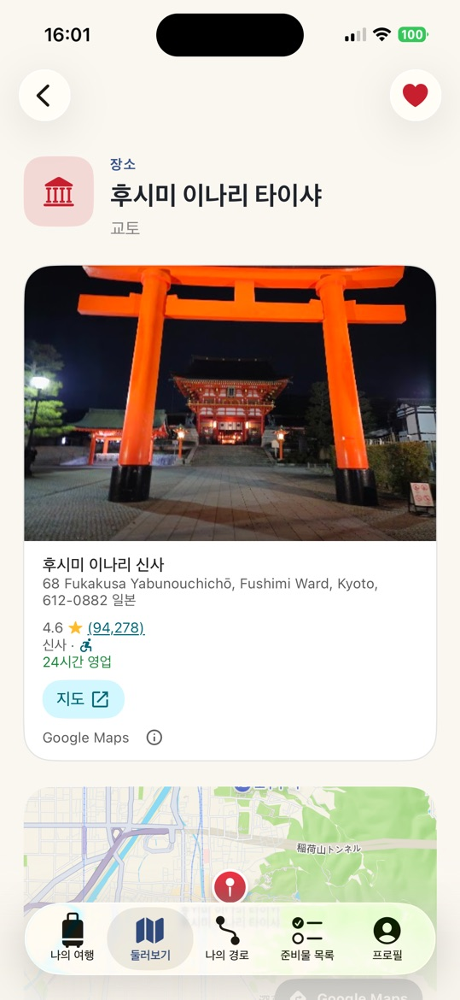
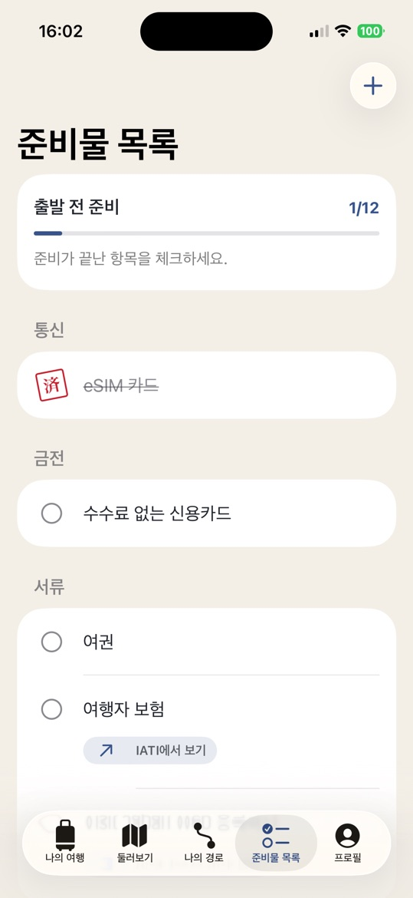
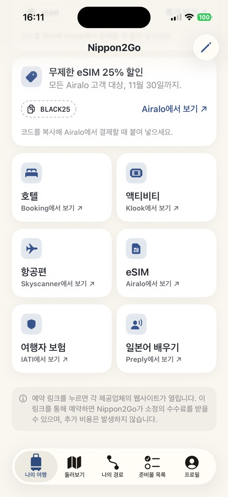
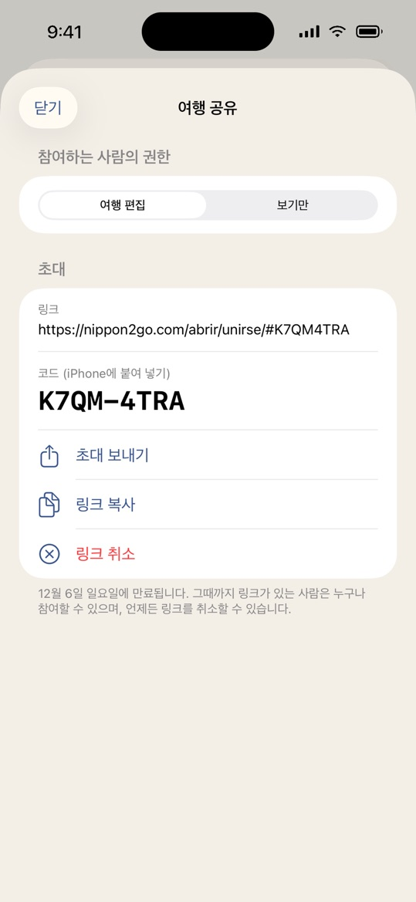

둘러보기
엄선한 장소 125곳 이상
도쿄, 교토, 오사카, 나라, 가마쿠라, 요코하마, 히로시마의 사찰, 전망대, 동네, 음식점, 호텔, 체험을 사진과 함께 소개하고, 유형별·도시별 필터로 골라 볼 수 있어요.

가장 좋은 장소를 찾아 현실적인 날짜별 경로로 만들고, 여권부터 JR 패스까지 모든 준비를 마친 채 일본에 도착하세요.
무료 · iPhone (iOS 17+) · Android

처음 여행을 떠올린 순간부터 일본에서의 마지막 날까지.
둘러보기
도쿄, 교토, 오사카, 나라, 가마쿠라, 요코하마, 히로시마의 사찰, 전망대, 동네, 음식점, 호텔, 체험을 사진과 함께 소개하고, 유형별·도시별 필터로 골라 볼 수 있어요.

나의 경로
경로에 장소를 추가하면 Nippon2Go가 도시마다 가까운 곳끼리 묶어 날짜별로 나누고, 시간과 거리, 걸어갈지 기차를 탈지까지 알려 줘요.

장소
Google 평점, 영업시간, 주소, Apple 지도와 Google 지도 길찾기까지 한 번에 볼 수 있어요. 입장권이 필요한 명소는 입장권 페이지로 바로 연결돼요.

준비물 목록
여권, 여행자 보험, eSIM, 플러그 변환 어댑터, JR 패스… 직접 추가한 항목까지, 하나씩 체크할 때마다 済 도장이 찍혀요.

예약
도시와 날짜가 미리 입력된 Booking.com 호텔, Klook 액티비티와 입장권, Airalo 일본 eSIM, Skyscanner 항공권, IATI 여행자 보험, Preply에서 튜터와 함께하는 일본어 수업까지 모두 연결돼요.

여행 공유
링크나 코드로 함께 여행하는 사람을 초대하세요. 모두가 자기 휴대폰(iPhone 또는 Android)에서 같은 여행을 보고 수정할 수 있어요. 누가 어떤 일정을 추가했고 무엇이 바뀌었는지 알 수 있고, 즐겨찾기와 나의 경로, 준비물 목록은 각자 따로 보관돼요. 계정은 공유할 때만 필요해요.

수정할 수 있는 날짜별 일정표를 일본 시간 기준으로 휴대폰 캘린더에 추가할 수 있어요.
계정 없이도 여행을 계획할 수 있어요. 여행은 내 휴대폰에 저장되고, 공유하거나 백업할 때만 로그인하면 돼요. 7개 언어를 지원해요.
가장 많이 묻는 질문에 빠르게 답해 드려요.
아니요. 로그인하지 않아도 여행 전체를 계획할 수 있어요. 계정은 여행을 공유하거나 사본을 백업할 때만 필요해요. 프로필에서 Apple이나 Google로 로그인하세요(Android는 Google).
내 휴대폰에 저장돼요. 로그인하면 프로필에서 계정에 사본을 백업할 수 있어요. 사진과 설정을 뺀 사본이 클라우드, 즉 EU에 있는 우리 서버에 저장돼요. 다른 휴대폰(iPhone 또는 Android)에서는 같은 계정으로 로그인하고 백업을 복원하세요. 사본은 자동으로 업데이트되지 않으니 여행을 바꾸면 다시 저장하세요. 사본 없이 앱을 삭제하면 여행도 삭제돼요.
네. 나의 여행에서 동행 목록을 열고 초대를 누른 뒤 로그인하세요. 참여하는 사람이 여행을 편집할 수 있을지, 보기만 할지 고른 다음 링크나 코드를 보내세요. iPhone과 Android 모두에서 돼요. 각자 바꾼 내용은 다른 사람에게도 전해져요.
여행, 경로, 준비물 목록은 휴대폰에 저장돼요. 지도, 장소 사진, Google 장소 정보, 예약 링크는 인터넷 연결이 필요해요.
둘러보기에서 장소를 열고 나의 경로에 추가를 누르세요. 나의 경로에서는 Nippon2Go가 장소를 도시와 거리에 따라 묶고, 모든 도시의 여행 속도에서 고른 속도(여유롭게, 적당하게, 알차게)에 맞춰 날짜별로 나눠요. 방문 시간을 조정한 다음 경로를 일정에 추가할 수 있어요. 시간과 거리는 예상치이니, 가기 전에 영업시간과 교통편을 꼭 확인하세요.
나의 여행에서 여행 일정을 캘린더에 추가를 누르고, 이벤트를 확인한 뒤 승인하세요. 처음에는 캘린더 접근을 허용해야 해요. 일정은 일본 시간으로 추가돼요.
Nippon2Go는 도시와 날짜가 미리 입력된 Booking.com을 열어 주고, 액티비티와 입장권은 Klook, 일본 eSIM은 Airalo, 항공권은 Skyscanner, 여행자 보험은 IATI, 일본어 수업은 Preply로 연결해 줘요. 예약은 각 업체에서 직접 하며, 해당 업체의 이용 약관과 개인정보 처리방침이 적용돼요.
프로필 → 앱 언어로 가세요. English, Español, Français, Deutsch, Italiano, 한국어, 繁體中文 중에서 고를 수 있고, 바로 적용돼요.
로그아웃하려면 프로필 → 계정 → 로그아웃으로 가세요. 여행은 휴대폰에 그대로 남아요. 계정을 삭제하려면 프로필에서 계정 삭제를 누르고 확인하세요. 서버에 있는 데이터(백업과 그룹에 보이는 이름)가 삭제되고 공유된 여행에서도 나가게 돼요. 동행의 여행은 그대로 남아요. 내 여행은 휴대폰에 그대로 있어요. 앱을 열지 않고 nippon2go.com/ko/delete-account/에서도 삭제할 수 있어요.
Nippon2Go는 여행자가 일본에서 갈 곳을 고르는 순간부터 예약하는 순간까지 함께해요. 업체 링크는 여행자에게 꼭 필요한 바로 그 자리에 나타나며, Booking.com 호텔, Skyscanner 항공권, Airalo 일본 eSIM, Klook 액티비티는 이미 각 업체의 제휴 프로그램을 통해 연결되고 있어요.
나의 경로의 각 도시에서는 그 도시의 체크인·체크아웃 날짜와 인원이 입력된 Booking.com이 앱 언어로 열려요. 날짜와 인원은 여행 정보에서 가져오거나 경로를 바탕으로 추정해요. 나의 여행과 프로필에서는 여행의 주요 도시 호텔을 여행 날짜에 맞춰 보여 주고, 둘러보기의 각 호텔에서는 그 도시의 호텔을 보여 줘요.
입장권이 필요한 장소는 Klook의 해당 입장권 페이지를 열고, 그 밖의 액티비티는 같은 도시의 Klook 액티비티로 연결돼요. 나의 여행에서도 Klook 액티비티로 연결돼요.
예약 섹션과 출발 전 준비물 목록은 항공권(Skyscanner), 일본 eSIM(Airalo), 여행자 보험(IATI), 일본어 수업(Preply)으로 연결돼요. 준비물 목록에서는 JR 패스(Klook)와 일본 입국 절차를 위한 공식 사이트인 Visit Japan Web으로도 연결돼요.
iPhone과 Android에서 영어, 스페인어, 프랑스어, 독일어, 이탈리아어, 한국어, 중국어 번체로 이용할 수 있어요.
Nippon2Go와의 제휴에 관심이 있으신가요? carlos@nippon2go.com으로 연락 주세요.
궁금한 점, 오류, 새로운 장소 아이디어가 있나요? carlos@nippon2go.com으로 메일 주세요.